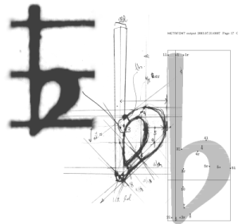

特徴
すぐれた伝統的な譜刻
LilyPond は、音楽家が美しく、読みやすい楽譜を作り出すことを可能にします。LilyPond の開発者コミュニティは、美しく譜刻された楽譜を生み出す強力な譜刻ソフトウェアを開発するために何千時間も費やしてきました。LilyPond の書式設定、フォント デザイン、それにアルゴリズムはすべて、手で譜刻された最高品質の楽譜を参考にしています。LilyPond の出力は、最高の職人によって作られた伝統的な楽譜と同じくらい、力強く、バランスがとれていて、美しい見栄えがします。これらのことについて、エッセー でさらに説明しています。
テキスト入力
すべてが明快
LilyPond は楽譜 コンテンツ に関するすべての情報を含み、誰にでも、また他のプログラムでも簡単に読むことのできる、テキスト入力を処理します。メニューやバイナリファイルに隠された不明瞭な設定はありません。
テキスト入力 のコンセプトをもっと読む。
堅牢で追跡可能な微調整
レイアウトを微調整した場合、人間が読める形で明快に見えるため、いつでも何をしたのか、たどることができます。誤って何かを壊してしまった場合でも、元に戻す 機能のなすがままに頼ることなく、簡単に元に戻したり修正したりすることができます。
テキストファイルは障害に強く、将来性があります
テキストファイルは破損に対して非常に堅牢です。人間が読むこともでき、ファイルを作成したプログラムが使えなくても、いつでも解釈できます。
楽譜をバージョン管理
テキストファイルはバージョン管理システムで管理できます。楽譜の変更履歴がすべて記録でき、無限に選べる「元に戻す」「やり直す」機能 を使うことができます。新しいコラボレーションの方法にもなるでしょう。
使いやすさ

効果的なレイアウト機能
出力の調整に時間を無駄にするのは止めましょう。LilyPond は最初から正しいフォーマットで出力します。緻密で統一のとれたレイアウトになるよう、スペースを自動的に決定し、改行、改ページを行います。歌詞、音符、和音の衝突回避、それにスラーや連桁の傾きは自動的に行われます！
楽譜と文章の混合
画像のカット＆ペーストをせずに、 楽譜の断片をテキストに入れることができます。LaTeX や HTML に楽譜を垣根無く統合できますし、OOoLilyPond を使えば OpenOffice.org や LibreOffice にOOoLilypondで楽譜を追加することも出来ます。LilyPond のコードを様々なブログ、Wiki で使用可能にするプラグインがあり、オンラインでコラボレーションできます。
アクセス性
テキスト ベースの入力は、重い身体障がいを持つユーザであっても、楽譜を記述することを可能にします。キーボードやマウスを扱うことができない、上肢障がいのあるユーザは、音声認識ソフトウェアを使って、LilyPond ファイルを編集することができます。盲目のユーザでさえも、読み上げソフトウェアを使って、LilyPond ファイルを記述することができます – これは、グラフィカル ベースの楽譜作成プログラムでは不可能なことです。壮観な楽譜の 例 を見てください。
多様な編集方法
自身が活発な LilyPond ユーザである開発者の何人かは、LilyPond ファイルの編集プロセスをより早く、より効率的に行うためのツールを作っています。一つのユーザインタフェースに縛られていないので、異なるタスクのために様々なツールを使うことができます。自宅では本格的な LilyPond エディタを使い、外出先では携帯電話のメモ帳アプリを使ってファイルを編集することができます。より簡単な編集手段 で例を挙げます。
拡張性の高い設計
スタイルシートによる簡単な管理
すべての設定は、個人的な写植上の好みに合わせて変更可能です。だから、簡単に LilyPond のデフォルトのあらゆる側面を変更するスタイルシートを作ることができます。スタイルシートもテキストであり、複数別々に保存できるので、単にスタイルシートを切り替えるだけで、完全に異なる外観やレイアウトの楽譜を生成することができます。A4用紙に総譜を印刷し、プロジェクターでは1スライドに1段投影したい？LilyPond のレイアウトエンジンは難なく同じ入力から両方を生成できます。
あなた自身の機能を追加
仮にそれが不十分な場合でも、LilyPond 自身と同じレベルで LilyPond のレイアウトエンジンにアクセスできる内蔵スクリプト言語 Scheme を常に使うことができ、とても 強力なツールにできます。全ての設定、変数、それに関数は、広範囲に亘るプログラム リファレンス マニュアルの中にドキュメント化されています。
プログラムで楽譜を処理
LilyPond の入力ファイルは、プログラムやスクリプトで完全に編集でき、生成することもできます。これは例えばアルゴリズムで作曲することもできます。分析のために音楽コンテンツにアクセスしたり、データベースで入力の断片を管理することもできます。想像できる限り制限はありません。
LilyPond を使った新しいツールを作る
LilyPond は一つの GUI プログラムではなく、コマンドラインツールなので、他のアプリケーションの中から使うこともできます。この方法で、Web アプリケーションに LilyPond の譜刻機能を持たせることができます。LilyPond を使ったオンラインツールがいくつかあります。
環境

素晴らしいサポート
LilyPond は一般的なプラットフォーム全て (GNU/Linux, MacOS, そして Windows) で動きます。LilyPond には広範囲のドキュメントと数百の実例ファイルが付属します。LilyPond ユーザー メーリング リストで質問に答えてくれる活発なユーザ コミュニティがあります。開発チームは問題が早期に解決されるよう活動しています。通常はすぐに回答がありますし、しばしば報告された問題に対する鮮やかな解決策が開発されます。開発チームの密接な対応のおかげで、そのような解決策はきちんと LilyPond へ取り込まれます。コミュニティ についてもっと読む。
フリー ソフトウェア
LilyPond は無料でダウンロードすることができます！そうです – 無料です。ダウンロード ページから入手してください。
LilyPond は (口語的な意味でも) フリーなソフトウェアです。ソース コードが公開されており、変更もコピーも認められています。ですから、バグにいらいらしていたり、仕様面で不満があるのなら、自分でそれを追加したり、他の人にそれを注文することが出来ます。 自由 についてもっと読む。